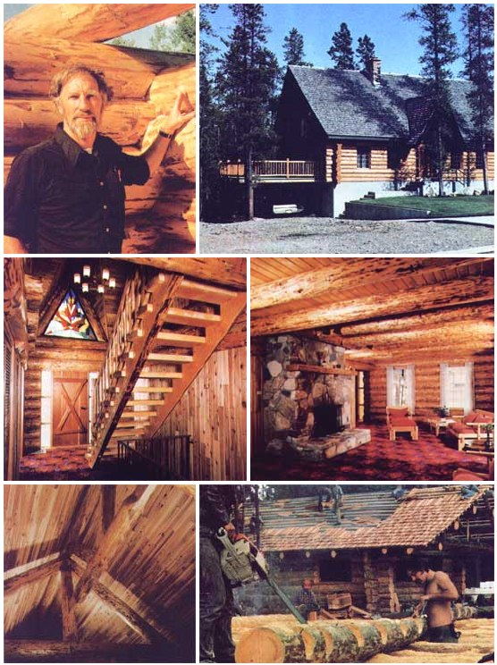

PHOTOS PROVIDED BY ALLAN AND MARY MACKIE
Logs can be peeled with an axe or a spade, but a peeling spud Is best. This can be made from a piece of truck spring with a socket welded to It of a size to take a regular spade handle. The spud should be about three inches wide and heavy enough to cut off small knots.